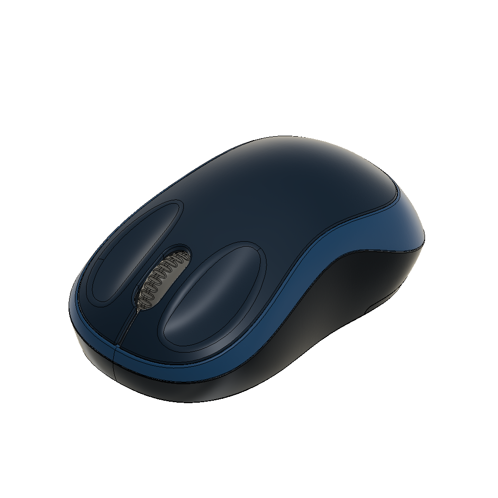

SIMON FORM LAB · LEVEL 13
定位與造型
從寬度、高度與前後位置，觀察輪廓如何牽動曲面
← 課程目錄01 / 04
長寬高決定範圍，輪廓決定裡面的造型

上視 · 看寬度
側視 · 看高度
同樣的長寬高，仍能安排不同的背部、腰線與側壁。
L13 · 定位與造型
調整輪廓，觀察曲面的變化拖曳旋轉 · 按鈕縮放
目前調整：寬度 X
僅顯示兩條輪廓間的局部影響範圍
上視 · X／Y
側視 · Y／Z
課程回顧
改變一個位置，也會牽動相鄰的面
01 · 定位
三個方向共同決定位置
X 控制左右半寬，Y 控制前後位置，Z 控制高度。上視與側視是同一組空間位置的不同表達。
02 · 連動
輪廓與曲面彼此牽制
前段變胖、後段收窄或腰線移動時，相鄰輪廓與曲面也必須一起承接。需要同時看局部轉折與整體比例。
03 · 觀察
比較變形前後的過渡
先看變化是否漸進，再留意局部突然擠密、尖折或輪廓反轉。遇到不合理的變化，回頭檢查控制位置與調整幅度。
控制位置輪廓變化曲面承接
本課保留背部最高處與底部，調整腰線附近的位置。局部參考線用來比較形變，不是實際鋪面的 UV，也不能取代曲率、接面與厚度檢查。